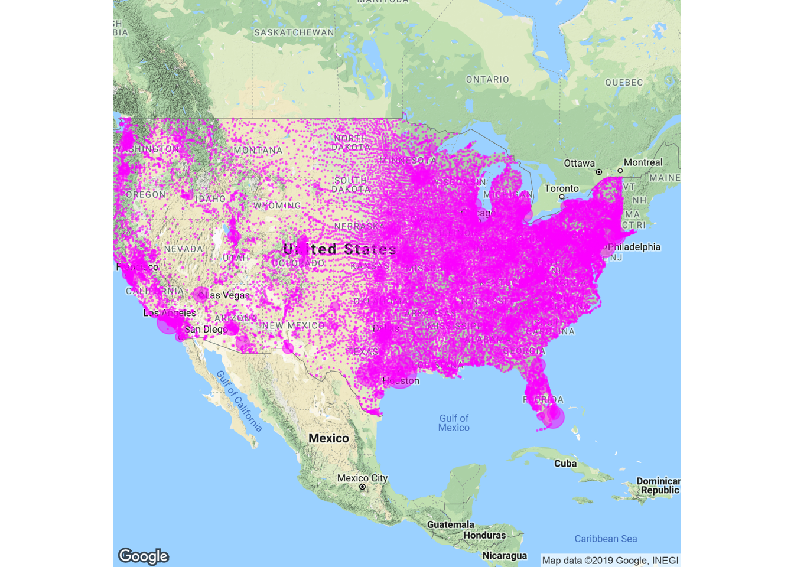
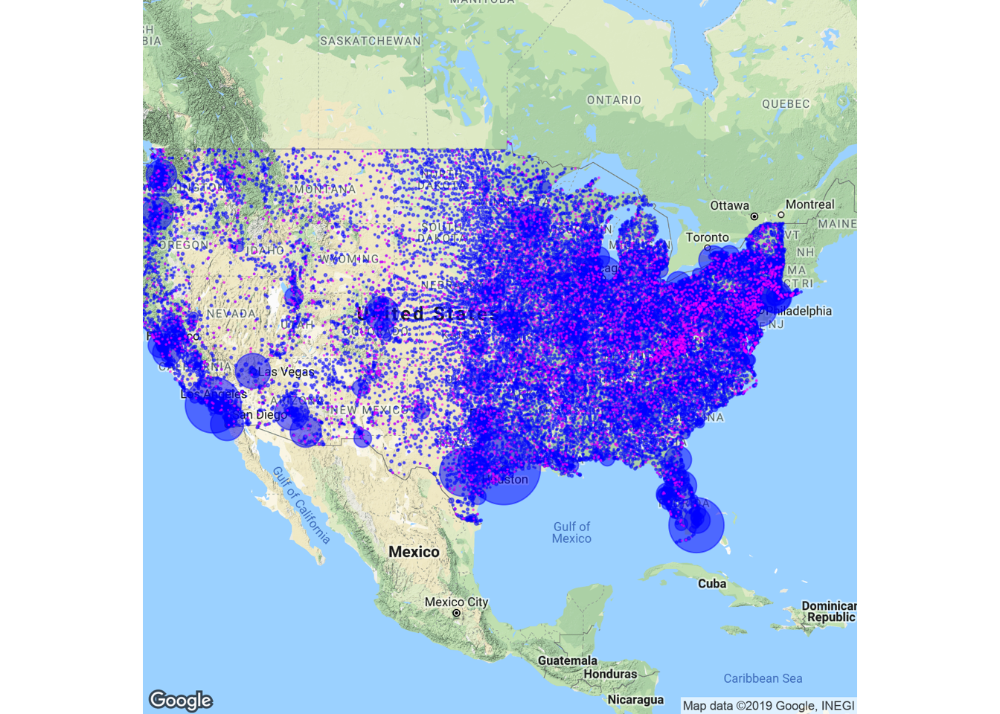
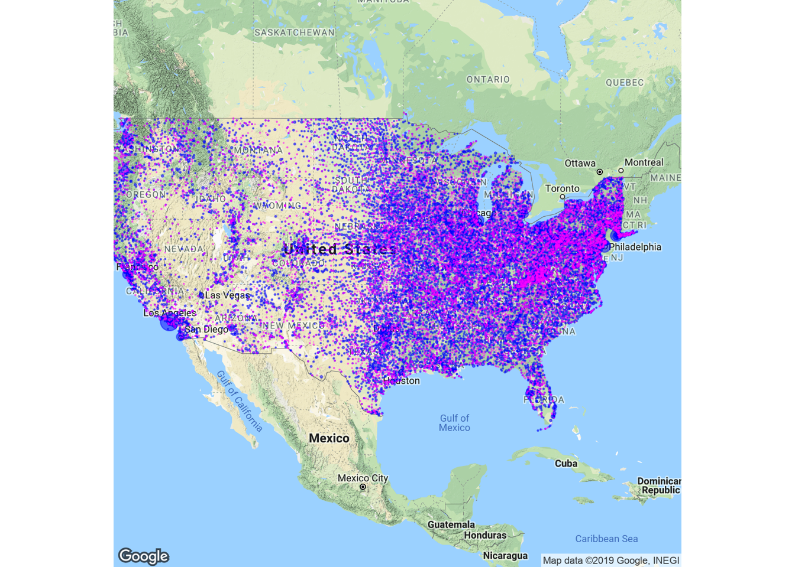

A friend of mine recently asked me what seemed like a fairly simple question: where are all of the single men? I was working with census data for my job, so I decided to look into it. Below is a summary of the results.
Summary: There are more never married men than women in the 24-34 age group (Figures 1, 3, 5; +8,066,286). This effect is present but greatly reduced in the 35-44 range (Figures 2, 4, 6; +527,913). There are far more single men in the 24-34 group when compared to the 35-44 group (+7,618,664), this is also true for women but to a lesser degree (+80,291).
While there are generally more never married men than women in the younger age group, there are some cities where the reverse is true. The places where the numbers are stacked against men tend to be larger cities (Tables 1 & 5A), while the areas that single women outnumber single men tend to be smaller ones (Tables 3 & 5B). This effect is carried over into the older (35-44) age group for both genders (Tables 2, 6A, 4, 6B).
It is important to remember that this is not longitudinal data of one population, it is a snapshot in time of two separate populations.
So, what does this mean? There are dramatically more single men in the younger than older age group. This effect is present, but much less dramatic for the women surveyed. My best guess is men in the older age group are married to women in the younger age group. The lack of a dramatic dip in single women among the younger and older group could be because the women in the older age group also married earlier either to similarly aged or older men. This is referred to as a “floor effect”. The numbers are so low in the younger female age group that they don’t have room to dip to the same degree as the numbers for the men.
| Rank: Men 24-34 | City | Density |
|---|---|---|
| 1 | Houston, TX | 55656 |
| 2 | Los Angeles, CA | 44966 |
| 3 | Chicago, IL | 37739 |
| 4 | Miami, FL | 36887 |
| 5 | San Antonio, TX | 33729 |
| 6 | Philadelphia, PA | 33652 |
| 7 | Saint Louis, MO | 29796 |
| 8 | Minneapolis, MN | 29051 |
| 9 | New York, NY | 29037 |
| 10 | Cincinnati, OH | 28974 |
| Rank: Men 35-44 | City | Density |
|---|---|---|
| 1 | Houston, TX | 55656 |
| 2 | Los Angeles, CA | 44966 |
| 3 | Chicago, IL | 37739 |
| 4 | Miami, FL | 36887 |
| 5 | San Antonio, TX | 33729 |
| 6 | Philadelphia, PA | 33652 |
| 7 | Saint Louis, MO | 29796 |
| 8 | Minneapolis, MN | 29051 |
| 9 | New York, NY | 29037 |
| 10 | Cincinnati, OH | 28974 |
| Rank: Women 24-34 | City | Density |
|---|---|---|
| 1 | Houston, TX | 55656 |
| 2 | Los Angeles, CA | 44966 |
| 3 | Philadelphia, PA | 33652 |
| 4 | Chicago, IL | 37739 |
| 5 | Cincinnati, OH | 28974 |
| 6 | New York, NY | 29037 |
| 7 | Saint Louis, MO | 29796 |
| 8 | Detroit, MI | 19713 |
| 9 | Kansas City, MO | 25654 |
| 10 | San Antonio, TX | 33729 |

| Rank: Women 35-44 | City | Density |
|---|---|---|
| 1 | Houston, TX | 55656 |
| 2 | Los Angeles, CA | 44966 |
| 3 | Philadelphia, PA | 33652 |
| 4 | Chicago, IL | 37739 |
| 5 | Cincinnati, OH | 28974 |
| 6 | New York, NY | 29037 |
| 7 | Saint Louis, MO | 29796 |
| 8 | Detroit, MI | 19713 |
| 9 | Kansas City, MO | 25654 |
| 10 | San Antonio, TX | 33729 |

| Rank: More Men than Women Ages 24-34 | City | Difference |
|---|---|---|
| 1 | Houston, TX | 33904 |
| 2 | Los Angeles, CA | 25731 |
| 3 | Miami, FL | 25349 |
| 4 | San Antonio, TX | 22061 |
| 5 | Chicago, IL | 19703 |
| 6 | Minneapolis, MN | 17553 |
| 7 | Dallas, TX | 15984 |
| 8 | Las Vegas, NV | 15927 |
| 9 | Atlanta, GA | 15702 |
| 10 | Saint Louis, MO | 15642 |
| Rank: More Women than Men Ages 24-34 | City | Difference |
|---|---|---|
| 1 | Bluff City, AR | 755 |
| 2 | Fishing Creek, MD | 755 |
| 3 | Annapolis Junction, MD | 751 |
| 4 | Johnsonville, IL | 750 |
| 5 | Pattison, MS | 749 |
| 6 | Anderson, AK | 746 |
| 7 | Cecil, PA | 745 |
| 8 | Circleville, NY | 744 |
| 9 | Fort Hall, ID | 744 |
| 10 | Idaho Falls, ID | 744 |

| Rank: More Men than Women Ages 35-44 | City | Difference |
|---|---|---|
| 1 | Los Angeles, CA | 10148 |
| 2 | Philadelphia, PA | 6524 |
| 3 | New York, NY | 6138 |
| 4 | Dallas, TX | 6132 |
| 5 | Chicago, IL | 5287 |
| 6 | Seattle, WA | 5217 |
| 7 | San Francisco, CA | 4957 |
| 8 | Austin, TX | 4799 |
| 9 | Atlanta, GA | 4352 |
| 10 | San Diego, CA | 4071 |
| Rank: More Women than Men Ages 35-44 | City | Difference |
|---|---|---|
| 1 | Vancouver, WA | 2507 |
| 2 | Amarillo, TX | 2451 |
| 3 | Bellevue, WA | 2303 |
| 4 | Riverside, CA | 1837 |
| 5 | Dayton, OH | 1771 |
| 6 | Plano, TX | 1737 |
| 7 | Carlsbad, CA | 1732 |
| 8 | Corona, CA | 1704 |
| 9 | Ogden, UT | 1634 |
| 10 | Gilbert, AZ | 1588 |